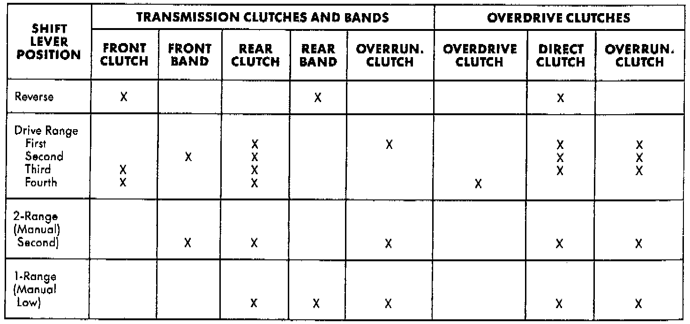

Road Testing
Band/Clutch Apply Chart For 46/47RE Automatic Transmissions Only:

ROAD TESTING
Before road testing, be sure the fluid level and control cable adjustments have been checked and adjusted if necessary. Verify that diagnostic trouble codes have been resolved.
Observe engine performance during the road test. A poorly tuned engine will not allow accurate analysis of transmission operation.
Operate the transmission in all gear ranges. Check for shift variations and engine flare which indicates slippage. Note if shifts are harsh, spongy, delayed, early, or if part throttle downshifts are sensitive.
Slippage indicated by engine flare, usually means clutch, band or overrunning clutch problems. If the condition is advanced, an overhaul will be necessary to restore normal operation.
A slipping clutch or band can often be determined by comparing which internal units are applied in the various gear ranges. The Clutch and Band Application chart provides a basis for analyzing road test results.
ANALYZING ROAD TEST
Refer to the Clutch and Band Application chart illustrated and note which elements are in use in the various gear ranges.
Note that the rear clutch is applied in all forward ranges (D, 2, 1). The transmission overrunning clutch is applied in first gear (D, 2 and 1 ranges) only. The rear band is applied in 1 and R range only.
Note that the overdrive clutch is applied only in fourth gear and the overdrive direct clutch and overrunning clutch are applied in all ranges except fourth gear.
For example: If slippage occurs in first gear in D and 2 range but not in 1 range, the transmission overrunning clutch is faulty. Similarly, if slippage occurs in any two forward gears, the rear clutch is slipping.
Applying the same method of analysis, note that the front and rear clutches are applied simultaneously only in D range third and fourth gear. If the transmission slips in third gear, either the front clutch or the rear clutch is slipping.
If the transmission slips in fourth gear but not in third gear, the overdrive clutch is slipping. By selecting another gear which does not use these clutches, the slipping unit can be determined. For example, if the transmission also slips in Reverse, the front clutch is slipping. If the transmission does not slip in Reverse, the rear clutch is slipping.
If slippage occurs during the 3-4 shift or only in fourth gear, the overdrive clutch is slipping. Similarly, if the direct clutch were to fail, the transmission would lose both reverse gear and overrun braking in 2 position (manual second gear).
If the transmission will not shift to fourth gear, the control switch, overdrive solenoid or related wiring may also be the problem cause.
This process of elimination can be used to identify a slipping unit and check operation. Proper use of the Clutch and Band Application Chart illustrated is the key.
Although road test analysis will help determine the slipping unit, the actual cause of a malfunction usually cannot be determined until hydraulic and air pressure tests are performed. Practically any condition can be caused by leaking hydraulic circuits or sticking valves.
Unless a malfunction is obvious, such as no drive in D range first gear, do not disassemble the transmission. Perform the hydraulic and air pressure tests to help determine the probable cause.